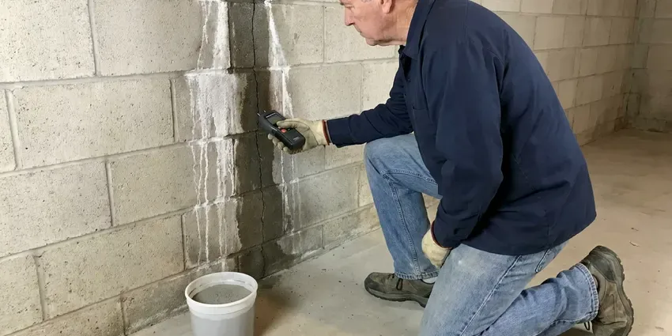

Flood Restoration in St. Paul, MN
CNV Plumbing cleans and dries flooded homes in St. Paul, MN, treating every surface the water touched.
- Insurance Claim Documentation
- Complete Drying & Repair
- Truck-Mounted Extraction
- Flood Cuts and Tear-Out
Same-Day Flood Restoration in St. Paul, MN.
Stay out of water near outlets, then call CNV Plumbing and we will handle the rest.
Flood Restoration in St. Paul, MN From Pump-Out to Rebuild
CNV Plumbing restores homes and businesses after flooding from heavy storms, overflowing drainage ditches, irrigation failures and major plumbing breaks. A battery backup sump pump and a backwater valve are smart protection for any finished basement. Pump-out, mud removal, sanitizing and commercial drying all happen in order. Then the rebuild starts.
Our expertise includes:
- Water heater and drain repair after flooding
- Submersible pump and truck-mount extraction for deep standing water
- Antimicrobial treatment, odor control and structural drying

Additional Plumbing Maintenance Services in St. Paul, MN
Our maintenance and specialty plumbing services in St. Paul, MN catch small problems before they become emergencies.


Customers
Why Choose CNV Plumbing for Flood Restoration in St. Paul, MN?
Soil, bacteria and debris ride in with flood water and soak into building materials. Prompt cleanup and sanitizing protect your health and limit how much has to be replaced before the rebuild can start. Fast work costs less.
- Fast Response, Crews go out right away, often within a couple of hours of your call.
- Moisture Mapping, Meters and thermal cameras show where water is hiding.
- Full Recovery, We handle drying, plumbing repairs and rebuild work in one project.
Citywide Coverage
Flood crews from CNV Plumbing cover all of St. Paul. Floods come at all hours. Crews are spread out so the nearest one can reach you fast, day or night.
Experienced Team
Hands-on flood experience runs through the CNV Plumbing crew. They have seen minor garage floods and basements filled to the outlets, and they know how each one should be pumped, cut and dried. The experience shows.
Safety-First Approach
Contamination is assumed with flood water, so crews wear protective equipment and follow strict cleaning procedures. We handle electrical hazards and check for sagging ceilings before working in wet rooms. Sagging drywall is dangerous.
Trusted Certified St. Paul Plumbing Services Professionals
At CNV Plumbing, we take pride in licensed, certified plumbing services throughout St. Paul, MN. Those papers on the wall mean something. Every repair, install and maintenance visit follows strict safety and quality rules, and the plumbers doing the work carry recognized industry credentials.
Call Us Now PHCC Plumbing Contractor Recognition
PHCC Plumbing Contractor Recognition Better Business Bureau (BBB) Accreditation
Better Business Bureau (BBB) Accreditation Angi Certified Pro
Angi Certified Pro ISO 9001 Quality Management Certification
ISO 9001 Quality Management CertificationFlood Restoration Services in St. Paul, MN
Sanitization and Odor Removal in St. Paul
Flood odor comes from bacteria growing in wet materials. Our flood restoration process in St. Paul removes the source, disinfects every surface the water touched, and runs HEPA air scrubbers to clean the air while drying continues. Covering the smell fails. The smell leaves once the materials are dry and clean.

Mold Remediation and Prevention in St. Paul
Flooded drywall and framing grow mold fast. Our crew in St. Paul removes porous materials the water touched, applies an EPA-registered antimicrobial to the framing, and dries the space fast enough to stay ahead of the 24 to 48 hour window. Visible mold gets sealed off. Containment keeps spores in place.
Sewage Backup Cleanup in St. Paul
Sewage is the dirtiest water a home can take in. We suit up, pull out sewage-soaked porous materials and disinfect what stays before drying. Waste gets bagged. Ask about a backwater valve.
Flooded Basement Restoration in St. Paul
Some older neighborhoods still have lead service lines, so replacing one is a smart move during other plumbing work. Below-grade basements catch storm and snowmelt water as it flows downhill. We pump out standing water, remove damaged finishes and dry the walls and floors with dehumidifiers sized for the cold, damp air down there. Check the sump pump.
Plumbing Repairs After Flooding in St. Paul, MN
Sometimes the plumbing caused the flood, and sometimes the flood broke the plumbing. We repair burst lines, swap flooded water heaters, clear floor drains and replace failed sump pumps. Everything gets tested. Water heaters from Rheem and Bradford White are on our trucks.
Structural Drying and Dehumidification in St. Paul, MN
Air movers push air across wet surfaces, and dehumidifiers pull the moisture out. Most flood jobs in St. Paul use low-grain refrigerant units, with desiccant units brought in for cold basements, concrete and dense hardwood. Readings come daily. Equipment stays until framing and subfloor match a dry reference.
Foundation Leak Repair after Flooding in St. Paul
Saturated ground pushes water against the foundation and into any crack it finds. Basements are the norm, so drain tile, sump pumps and perimeter drains are central to keeping homes dry. Our crews in St. Paul dry what we can reach, then look at where the water came in, whether through a wall crack, a floor joint, a window well or a plumbing penetration. Then we seal it. Major cracks need an engineer.

Emergency Water Extraction in St. Paul
Standing water comes out before anything else. Our crews set submersible pumps in the deepest spots and run discharge hoses well away from the foundation, then follow with truck-mounted extraction on carpet and hard floors. It goes quickly. A flooded basement can drop several inches an hour.
Flood Cleanup Near Me in St. Paul, MN
Looking for flood help near you in St. Paul, MN? CNV Plumbing has plumbers and restoration techs out of the same local shop. You only call once. The plumber deals with the flooded water heater and drains while the restoration crew pumps and dries, so the work moves in parallel instead of in a line.
Residents and businesses across St. Paul call us after storms and pipe breaks. Basements are the norm, so drain tile, sump pumps and foundation drainage are central to keeping homes dry. Our crews have seen how that ground condition affects drying, and we plan equipment and timing around it from the first day. It changes the setup.
CNV Plumbing at a Glance
- Licensed and insured plumbers serving St. Paul, MN
- 24/7 emergency service with same-day scheduling
- Clear written estimates, no hidden fees
- 4.8-star rated by 501+ Minnesota customers
St. Paul Map
St. Paul Information
- Population
- 303,820
- Area codes
- Local
- Service area
- St. Paul and towns within a 40 mile drive
- Nearby
- Minneapolis, Woodbury, Eagan, St. Louis Park
Sudden storms, hard ground and runoff from nearby drainage areas can flood St. Paul, MN homes with little warning, so fast flood restoration protects your property and health.
Expert Services
Reach out to CNV Plumbing for honest, reliable plumbing from people who know the trade in St. Paul, MN.
Our Specialized Plumbing Services in St. Paul, MN
At CNV Plumbing, you get every kind of plumbing service from one company across St. Paul, MN. We go from leak detection all the way to full system installations, for homes and commercial buildings, and we do it quickly at a fair price. Take a look at our core services below:


How Flood Restoration Works in St. Paul, MN
From the first call to the final reading, here is what happens on a flood in St. Paul, MN.
Call for Help
Call (612) 712-9569 for emergency flood service. We dispatch a team fast.
Safety Check
Our technicians check electrical and gas hazards, then lay out the work.
Remove Water
Pumps and extractors pull out the water, which shortens drying time.
Frequently Asked Questions About Flood Restoration in St. Paul
Costs in St. Paul, MN depend on how deep the water got, how many rooms it reached and what it carried in. Minor clean water floods often cost $1,500 to $4,000, and large basement floods with rebuild run $10,000 to $30,000. Water level matters most. You get a written estimate.
We remove saturated porous materials, apply antimicrobial to the framing and dry the structure with commercial dehumidifiers and air movers. Meters confirm dry before rebuild. Speed beats mold.
Speed and dryness are the whole strategy. Fast pump-out, removal of wet porous materials, antimicrobial on framing and dehumidifiers until dry. Readings confirm it.
Pump-out and drying alone rarely need a permit. Major structural repairs, electrical work or plumbing replacement usually do, and the St. Paul building department sets the rules for each type of work. We handle the paperwork.
Usually, if the controls went under. Water heaters whose burners, gas valves or insulation were submerged are often unsafe and should be replaced rather than relit. Each heater gets inspected, and we recommend based on what was underwater.
Clean water in small amounts may be manageable. Dirty flood water needs gear and disinfection. Hidden moisture in walls and floors can cause mold if it is not dried thoroughly, and professional cleanup is safer and more thorough.
It depends on where the water came from. Sudden plumbing failures are usually covered, but outside water typically needs flood insurance. Records come from us.
Submersible pumps handle deep standing water, and truck-mounted extractors pull it out of carpet and floors. Drying gear includes air movers, LGR and desiccant dehumidifiers, HEPA scrubbers and moisture meters. Every truck carries it.
Hear From Customers Who Hired Our Plumbing Experts

Lisa C.
Water was pouring out from under the washing machine on a holiday weekend. CNV Plumbing talked me through closing the valves over the phone and had a plumber at the house within ninety minutes. It was a burst fill hose.
Emergency Plumbing · Bloomington, MN
Angela D.
Our sump pump quit during a storm and the water was an inch from the basement carpet. CNV Plumbing put in a new pump with a battery backup that same evening. We have had two heavy rains since. It kicked on both times.
Sump Pump · Edina, MNRachel N.
Hard water was leaving white crust on every faucet and our dishwasher was struggling. The tech tested the water, recommended a softener sized for a family of five, and installed it with a bypass valve in one afternoon. The spots on our glasses are gone.
Water Softener · Eagan, MN
Tyler J.
We bought a taller comfort height toilet for my dad, who just had knee surgery. The plumber pulled the old one, found the flange was cracked, and replaced it before setting the new bowl. Took about two hours.
Toilet Installation · Minneapolis, MN
James P.
Our restaurant had a slow leak at the hand sink that was rotting the cabinet base. CNV Plumbing came in at six in the morning before prep, replaced the trap and both supply lines, and was packed up before my first cook clocked in.
Commercial Plumbing · Edina, MNRobert G.
The camera showed a full break in our clay sewer line near the street. CNV Plumbing replaced it with a trenchless pipe burst, so the only digging was two small pits in the yard. They let us watch the footage before and after.
Sewer Line Replacement · Edina, MN